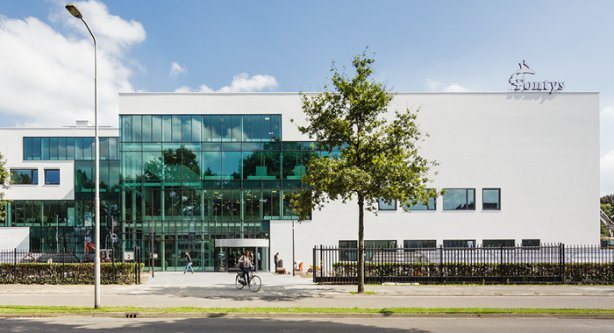
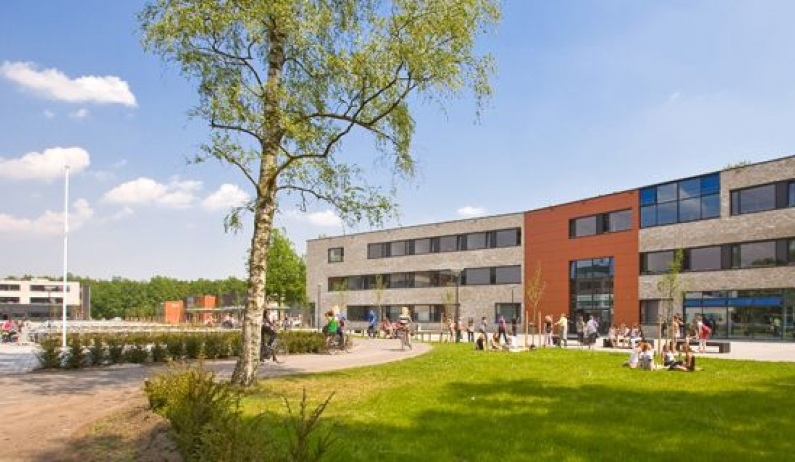

Otger van Delft heeft een paar banen gehad bij scholen. Dat is ook best logisch want hij heeft wiskunde en natuurkunde en daarbij ook onderwijs gestudeert. Deze opleiding heeft hij van 1985 tot 1990 gevolgd. Tijdens deze opleiding, en natuurlijk tijdens het werken bij scholen, heeft hij veel geleerd over les geven en onderwijstechnologie.

In 1996 is hij gaan werken bij Fontys Hogescholen in Eindhoven. Hier heeft hij tot 2008 gewerkt als leraar.
Hier heeft hij veel ervaring op gedaan en is hij in de technologie kant gekomen. Dit zou later een verandering in zijn werk zijn.

Na 12 jaar op de Fontys te hebben gewerkt, is hij van werkplek verandert en is hij bij Scholengemeenschap Were Di gaan werken. Hier is hij begonnen als Wiskunde leraar, maar hij is na enkele jaren overgestap naar het nieuwe project op Were Di, Infomatica, waar hij nu nog steeds als hele goede Infomatica leraar werkt.